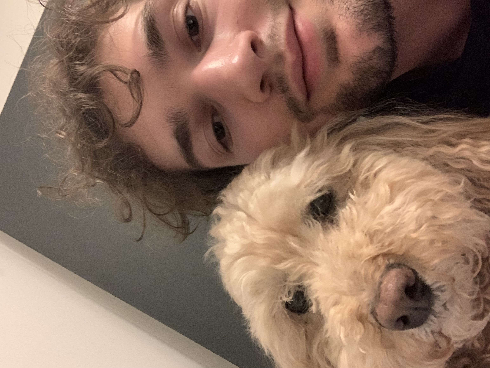
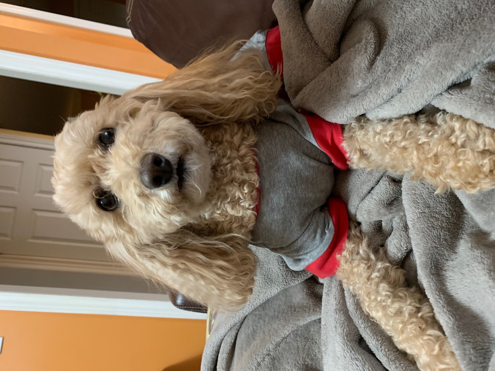
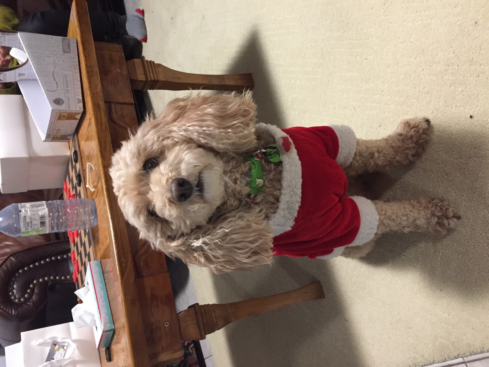
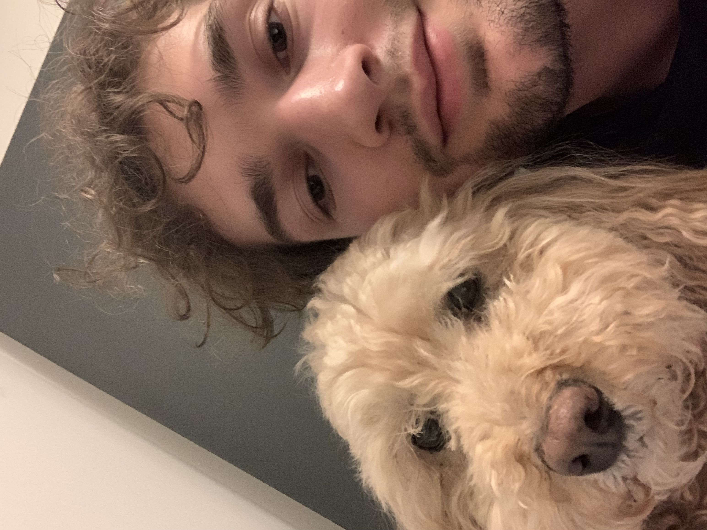
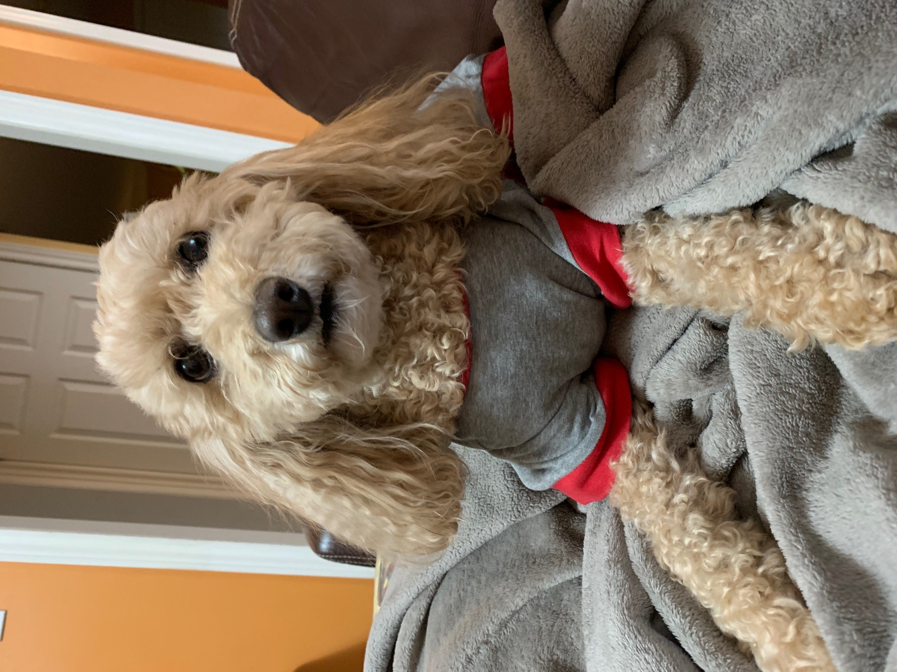
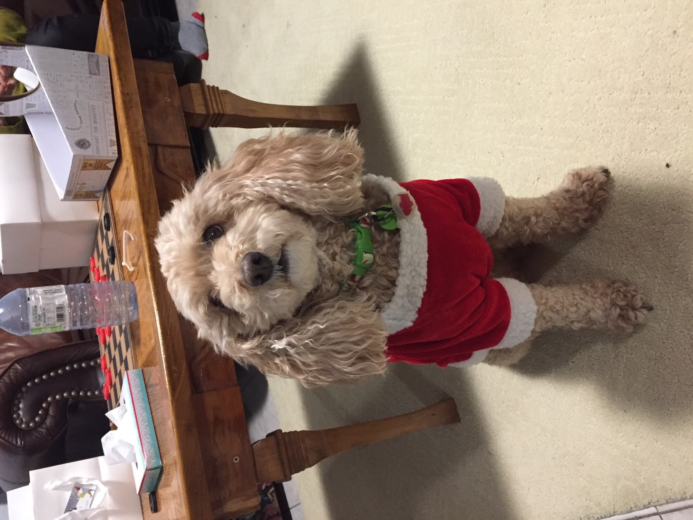

Matthew's Site
About Me
Ciao ragazzi! I’m Matthew — welcome to my corner of the internet. Describing myself has always felt a bit strange. I could start with the usual “I’m a mechanical engineer from the University of Waterloo,” but that alone doesn’t capture who I am. Honestly, I’m still figuring that out.
I grew up in the suburbs just outside Toronto, Canada — a place that’s been home for most of my life and still grounds me with strong family roots. But my heart tends to wander. Over the past few years I’ve solo-travelled through Italy for a month, taken work trips to Colombia and India, and mountain biked across the surreal landscapes of Iceland.
Another constant in my life is the gym. It’s one of the few passions that has stayed with me since before high school, and I’m grateful it has. No matter how chaotic or frustrating a day becomes, I can always find solace in that dark, sweaty temple dedicated to the worship of iron.
This website is my attempt to reclaim something I’ve been missing: creativity. I’ve spent a long time consuming things made by others without producing much of my own. That changes here. I’m diving back into coding — a skill I’ve flirted with for years but am finally committing to — and experimenting with creative writing, artwork, and whatever else inspires me along the way.
Thanks for stopping by! I hope you enjoy my site.
Photo Gallery
Enjoy some fun photos.
 





Blog
Some light reading material for the more curious among us.